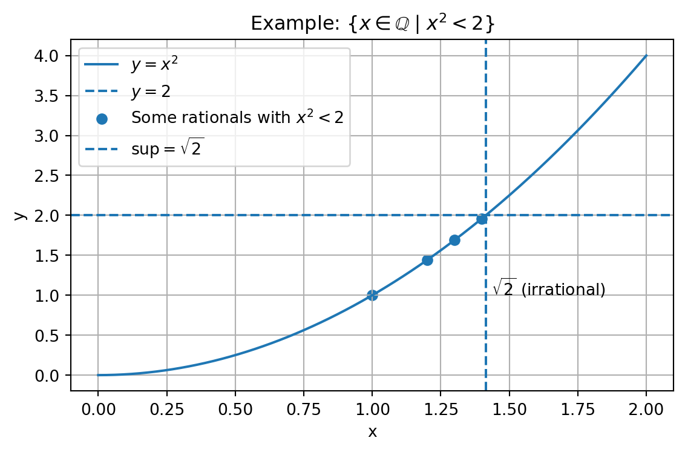

We explore structural concepts (irrationality of √2, countability, Cantor’s diagonal, finite decimals) and the properties that make ℝ a complete ordered field.
Prove when a rational has a finite decimal (denominator with only factors 2 and/or 5);
Summarize why \(\mathbb{R}\) is a complete ordered field (supremum axiom);
Visualize \(\{x\in\mathbb{Q}\mid x^2<2\}\) using Python;
Consolidate with guided exercises.
1.1 🧠Deep Dive: Proof that \(\sqrt{2}\) is not rational
Note🧠Proof by contradiction: \(\sqrt{2}\notin\mathbb{Q}\)
Proposition.\(\sqrt{2}\) is irrational.
Proof. Suppose, for contradiction, that \(\sqrt{2}=\frac{a}{b}\) with \(a,b\in\mathbb{Z}\), \(b\neq 0\), and \(\gcd(a,b)=1\).
Squaring: \(2=\frac{a^2}{b^2}\Rightarrow a^2=2b^2\). Thus, \(a^2\) is even, so \(a=2k\). Substituting: \(4k^2=2b^2\Rightarrow b^2=2k^2\), hence \(b\) is even. Contradiction, since both \(a\) and \(b\) would be even \(\Rightarrow \gcd(a,b)\ge2\).
Therefore, \(\sqrt{2}\notin\mathbb{Q}\). \(\square\)
1.2 🧠Deep Dive: Comment on proof by contradiction
Important🧠About the proof technique
The technique assumes the negation of what is to be proven and extracts a logical contradiction. In the case of \(\sqrt{2}\), the rationality hypothesis forces both \(a\) and \(b\) to be even, contradicting irreducibility. Hence, the hypothesis is false.
1.3 🧠Deep Dive: Countable and uncountable sets
Note🧠Countable vs. uncountable
Countable: admits a bijection with \(\mathbb{N}\) → one can list the elements (possibly in a non-obvious order). Examples: \(\mathbb{N}\), \(\mathbb{Z}\), \(\mathbb{Q}\).
Uncountable: does not admit such a listing; it has “more†elements than \(\mathbb{N}\). Example: \(\mathbb{R}\) (and therefore \(\mathbb{R}\setminus\mathbb{Q}\)).
1.4 🧠Deep Dive: The diagonal method and uncountable reals
Important🧠Cantor’s diagonal argument: \([0,1]\) is uncountable
Suppose all reals in \([0,1]\) are listed: \(x_1,x_2,\dots\), with decimal expansions \(x_i=0.a_{i1}a_{i2}\ldots\).
Construct \(y=0.b_1b_2\ldots\) by choosing \(b_n\neq a_{nn}\). Thus, \(y\) differs from every\(x_n\) at digit \(n\), so it is not on the list. Contradiction.
Therefore, \(\mathbb{R}\) (already within \([0,1]\)) is uncountable.
Cantor’s diagonal method — reals
Credit: Jochen Burghardt — CC BY-SA 3.0.
1.5 🧠Deep Dive: Countability of \(\mathbb{Q}\)
NoteEnumerating rationals without duplicates (diagonals + gcd)
Write all pairs \((p,q)\in\mathbb{N}\times\mathbb{N}\) in a table;
Traverse by diagonals with sum \(p+q=k\) (for \(k=2,3,4,\ldots\));
List \(\tfrac{p}{q}\)only when \(\gcd(p,q)=1\) (irreducible) → avoids repetitions.
For negatives and \(0\), interleave signs and include \(0=\frac{0}{1}\).
Classical idea (see, for example, Courant & John).
Diagonal method — rationals
Credit: Cronholm144 — CC BY-SA 3.0.
1.6 🧠Deep Dive: Finiteness of decimal representation
Important🧠Theorem: finite decimal ⇔ denominator (in lowest terms) has only factors 2 and/or 5
If \(\tfrac{a}{b}\) is in lowest terms, then its decimal expansion is finiteif and only if\(b\) has only prime factors \(2\) and \(5\). Idea of the proof: write \(\tfrac{a}{b}\) with denominator \(10^n=2^n\cdot5^n\); this is only possible if \(b\) (already simplified) contains no primes other than \(2\) and \(5\).
1.7 🧠Deep Dive: \(\mathbb{R}\) as a complete ordered field
Note🧠Structure of \(\mathbb{R}\)
Field \((\mathbb{R},+,\cdot)\): usual additive and multiplicative laws, distributivity, and inverses (except for \(0\) in multiplication). Compatible total order \(\le\): trichotomy; \(a\le b\Rightarrow a+c\le b+c\); \(0\le a,0\le b\Rightarrow 0\le ab\). Completeness (supremum axiom): every non-empty subset that is bounded above has a supremum in \(\mathbb{R}\).
This fails in \(\mathbb{Q}\).
1.8 🧠The completeness property: central example
Consider \(A=\{x\in\mathbb{Q}\mid x^2<2\}\). \(A\) is bounded above (for instance, by \(2\), or even by \(1.5\), \(1.42\), 9.9, etc.).
In \(\mathbb{Q}\), the supremum does not exist: the natural candidate would be \(\sqrt{2}\), but \(\sqrt{2}\notin\mathbb{Q}\).
In \(\mathbb{R}\), \(\sup A=\sqrt{2}\).
Note👨‍💻 🐍 Python — Visualization of {\(x\in\mathbb{Q}\mid x^2<2\)}
import matplotlib.pyplot as pltimport numpy as npfrom pathlib import Pathimport os# Domain and curvex = np.linspace(0, 2, 400)y = x**2# Some rationals with x^2 < 2rational_x = np.array([1.0, 1.2, 1.3, 1.4])rational_y = rational_x**2sqrt2 = np.sqrt(2)plt.figure(figsize=(6, 4))plt.plot(x, y, label=r'$y = x^2$')plt.axhline(2, linestyle='--', label=r'$y = 2$')plt.scatter(rational_x, rational_y, label=r'Some rationals with $x^2 < 2$')# Mark supremum in ℝplt.axvline(sqrt2, linestyle='--', label=r'$\sup = \sqrt{2}$')plt.text(sqrt2 +0.02, 1, r'$\sqrt{2}$(irrational)')plt.title(r'Example: $\{x \in \mathbb{Q} \mid x^2 < 2\}$')plt.xlabel('x'); plt.ylabel('y')plt.grid(True); plt.legend(); plt.tight_layout()# Save figure (for reuse in the site)try: base = Path(__file__).parent.resolve()exceptNameError: base = Path(os.getcwd()).resolve()out = (base /".."/"images"/"grafico_completude.png").resolve()plt.savefig(out, dpi=150, bbox_inches="tight")plt.show()

Set {x ∈ ℚ | x² < 2} against y=x², marking √2 as supremum in ℝ.
1.9 🧠Review Exercises
Note🧠Review Exercises — Advanced
Classify as countable or uncountable: \(\mathbb{N}\), \(\mathbb{Z}\), \(\mathbb{Q}\), \(\mathbb{R}\), positive irrationals.
Describe Cantor’s diagonal argument to prove that \([0,1]\) is uncountable.
Explain “complete ordered field†in your own words.
Prove by contradiction that \(\sqrt{2}\notin\mathbb{Q}\).
Show that the decimal expansion of a rational number is finite or repeating.
Why does there not exist a rational number with an infinite non-repeating decimal expansion?
Define a countable set and justify why \(\mathbb{Q}\) is countable (outline via diagonals).
Show that \(\mathbb{N}\times\mathbb{N}\) is countable.
Give an example showing that completeness fails in \(\mathbb{Q}\).
Find the generating fraction of \(x=0.142857\,142857\ldots\).
1.10 📠Worked Solutions
Important📠Worked Solutions
\(\mathbb{N}\), \(\mathbb{Z}\), \(\mathbb{Q}\): countable. \(\mathbb{R}\) and the positive irrationals: uncountable.
Construct a number that differs from the diagonal of a supposedly complete decimal list; the constructed number is not in the list.
Structure with the usual \(+,\times,\le\) and supremum axiom: every non-empty set bounded above has a least upper bound in \(\mathbb{R}\).
Assume \(\sqrt{2}=\tfrac{p}{q}\) in lowest terms \(\Rightarrow p,q\) both even \(\Rightarrow\) contradiction.
In the division \(p\div q\), there are at most \(q\) remainders; some remainder repeats \(\Rightarrow\) decimal finite or repeating.
An infinite non-repeating decimal means no remainder repeats \(\Rightarrow\)irrational.
Countable: there is a bijection with \(\mathbb{N}\). For \(\mathbb{Q}\): arrange via diagonals with gcd filter \(=1\).
\(\mathbb{N}\times\mathbb{N}\) is listed by diagonals \((1,1),(1,2),(2,1),(1,3),\ldots\); thus bijection with \(\mathbb{N}\).
\(A=\{x\in\mathbb{Q}\mid x^2<2\}\) is bounded above, but has no supremum in \(\mathbb{Q}\) (it would be \(\sqrt{2}\)).
Period 6. \(10^6x=142857.142857\ldots\); \(10^6x-x=142857\Rightarrow 999999x=142857\Rightarrow x=\tfrac{142857}{999999}=\tfrac{1}{7}\).